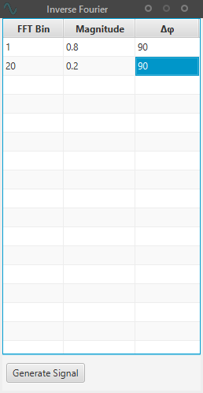

Inverse Fourier Window
|
This window lets the user generate an arbitrary signal by specifying its frequency components. FFT BinSpecifies the frequency component. The final frequency follows the formula: fout = fgui * fftBinMagnitudeUse it as weighting factor for the frequency components. Unitless value between 0 and 1.delta PhiThe phase difference in degrees.NOTE: The resulting waveform will always be mapped to +-1.0. All signals of the application are internally in this range. Therefore the "Magnitude" field is really just a weighting factor. |
 |